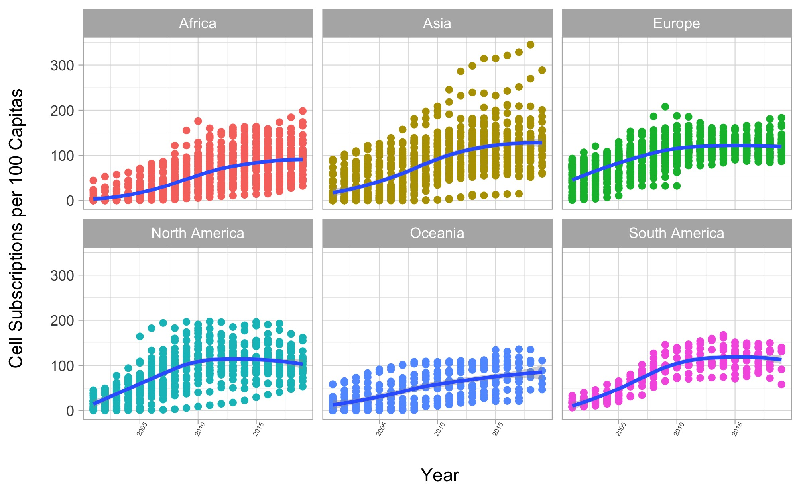
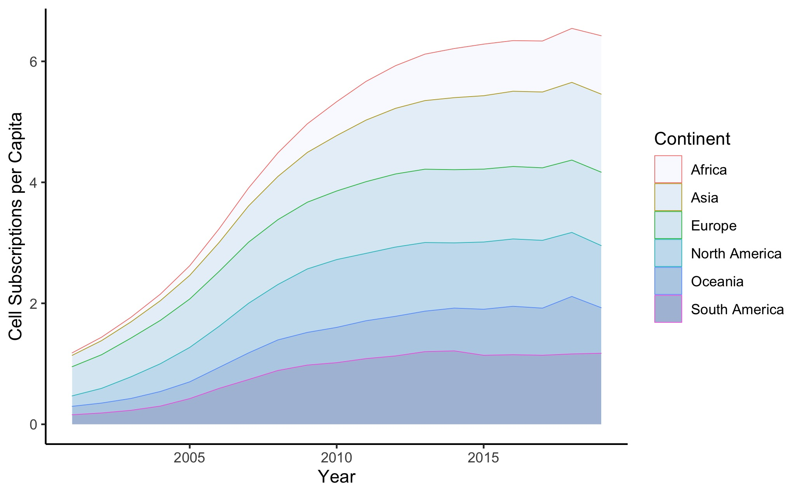
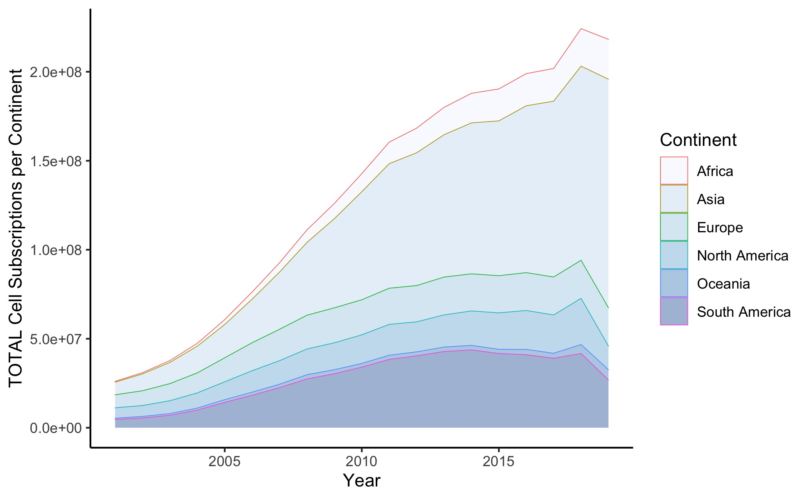
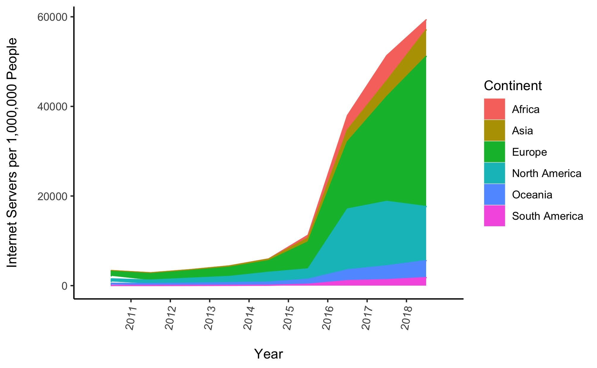
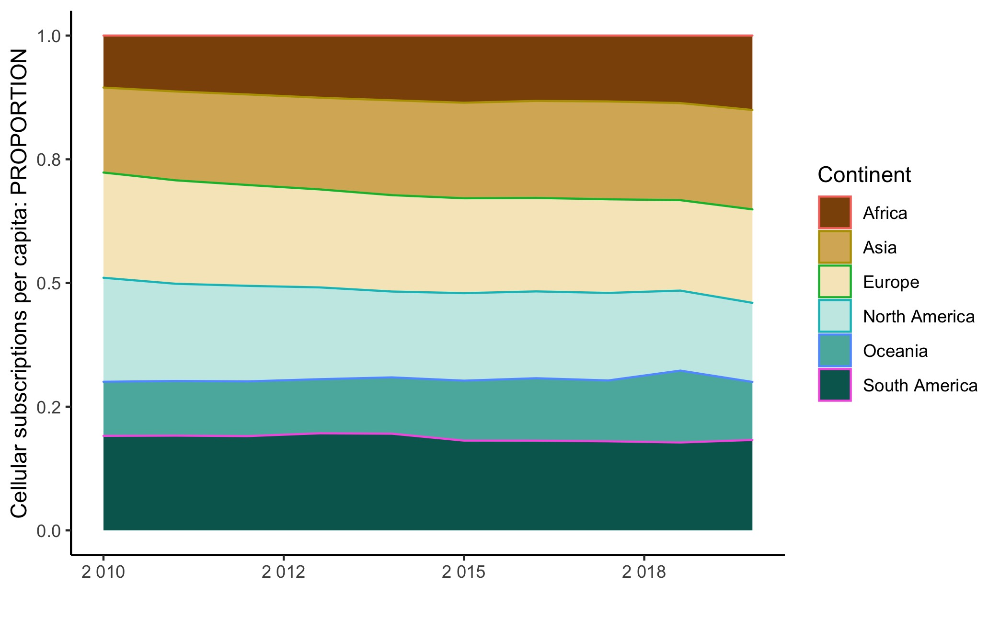
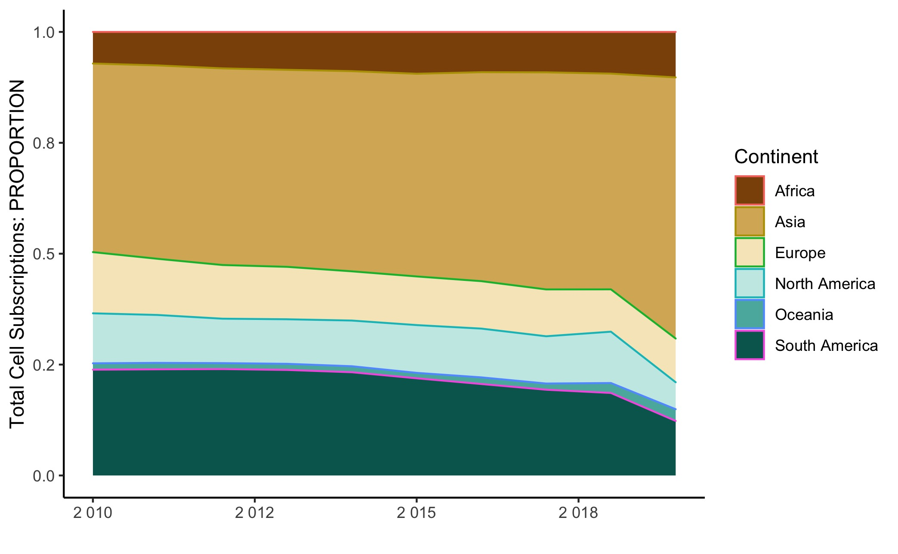
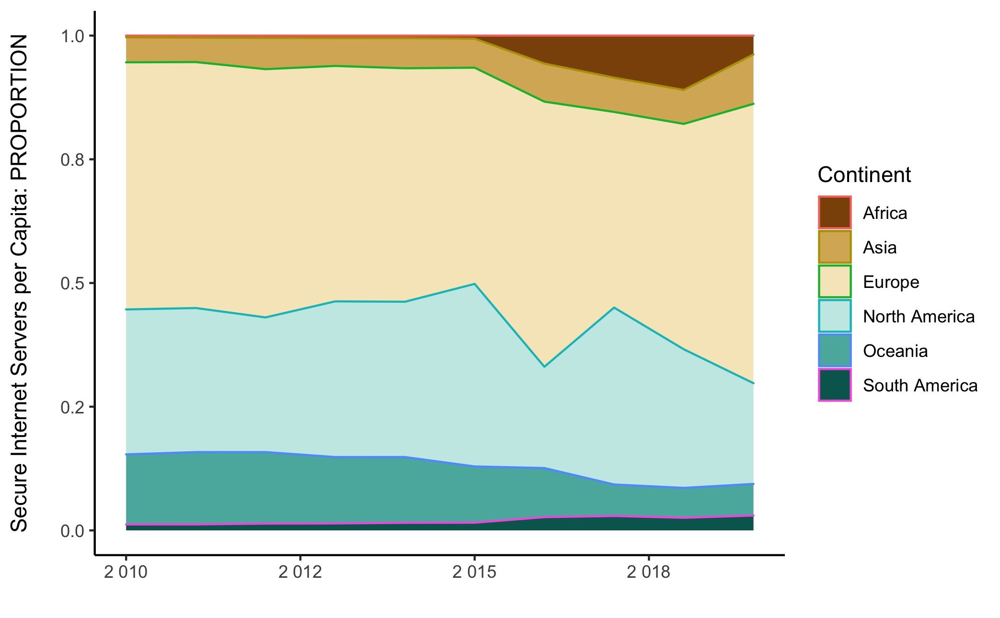

Can a series of spreadsheets tell us a story about our newly interconnected world, and each country's unique place in the growing network of digital communication?
This project explores data from the World Bank and the Gapminder Institute, which was collected as part of the World Development Indicators initiative from the International Telecommunication Union (ITU) World Telecommunication/ICT Indicators Database. The charts below were created in RStudio with ggplot2 and gganimate, and display information about communications connectivity per country, as evidenced by certain proxies.
The main dataset we'll use contains the number of cell phone subscriptions per country as counted per 100 people in that country's population; this dataset contains values for each year between 2001 and 2019. At the end, we'll also tinker a bit with data that shows the total number of cell subscriptions (agnostic to population) and number of secure internet servers around the world.
A Scatterplot in Small Multiples
Let's start with the basics. A scatterplot representing the growth of cell phone subscriptions in each country would be an easy way to see the growth in connectivity at a glance. But it's difficult to visualize almost 20 years of data for 214 countries in the same chart. Using the "small multiples" concept, achieved using the handy R property "facet_wrap", we can instead examine these growth rates as grouped by continent. Aided by color coding, this graphic is easier to digest. Each scatterplot below represents a timeline of the growth in cell connections over the past two decades.
Some interesting patterns emerge right away. For instance, there seems to be a large disparity in Asian citizens' access to, or interest in, cell phone subscriptions; both the highest and lowest rates of growth appear to be part of this continent. North America also had a large disparity in the mid-2000s, which seems to have somewhat evened out since. Oceania's numbers have stayed low, likely due to the lack of cell infrastructure on remote Pacific islands. It will be interesting to see if this number grows with the advent of satellite based 4G cellular networks like Lynk.
Easy as ABC:
Animated Bubble Chart
The gif at the top of this page displays the subscription growth of every country in the database simultaneously. And it's fun to watch, if I do say so myself. But until it's interactive, it will be difficult to distinguish which bubble belongs to which country. Again making use of small multiples via "facet_wrap", we'll sort these by continent and see what trends we can find in growth speed.

It's obvious from this graph that Europe started with the highest average overall connectivity back in the early 2000s. Perhaps because of that initial surplus, its growth seems to have stalled in the meantime. There are a few noticeable reversals in the growth trend over time, noteably in Asia and some parts of Africa. It would be interesting to investigate what other trends in these countries may be affecting this ratio, like population and economic growth.
Experimenting with Tufte's Slope Chart
Slope charts can show growth over time, and are especially handy when comparing different rates of growth, as we are interested in doing here. This chart shows the values at the beginning (2001) and end (2019) of our dataset as averaged for each continent. The steepness of the line reflects the rate of change since 2001.

Africa started with the least access to cell networks, but in the past two decades it surpassed Oceania. Now, there is on average one cell phone subscription for every person counted in Africa, while 25% of Oceanian residents do not have a cell subscription to their "name" as represented in the dataset.
Stacked Area Charts
My brilliant colleague Yuriko recommended a stacked area chart to show more nuanced information than the slope chart above. Using pivot tables and continent averages, I created some area charts using the geom_area function in ggplot2. This chart shows the same dataset we've been exploring so far: cell phone subscriptions per 100 people.
This chart shows a similar dataset, but without respect to population; the proportions here represent the total number of cellular subscriptions per country, regardless of its size.
When compared with the chart prior, it seems that Asia's cell phone subscription numbers are much more similar to the rest of the world when you consider its vast population.
Cell phones aren't the only indicator of digital connectivity. The Gapminder data also included statistics on secure internet servers in different locations around the world, shown below. This dataset is also relative to population.
However, this type of plot can be confusing at a glance, since it appears that Africa has the highest number of cell subscriptions per capita, when the chart is simply showing the proportion of each continent's cell phone subscribers to the whole. This is a known issue with stacked area charts, which is too bad, because they're very aesthetically pleasing.
Let's try another version which makes the comparison a little more obvious.
Proportional Stacked Area Charts
In my opinion, proportional stacked area charts are a better version of the area chart. Seeing at a glance that the y axis's maximum is 1 is a better immediate indication to the eye that we're dealing with proportions of a whole.
Here's our familiar phones-per-hundred data in the form of a proportional stacked area chart. Asia and Europe look much more on par here, where growth speed is not as obvious.
And here are the cell phones - total:
South America's proportional total seems relatively steady, but its raw total looks as though it's dropping off; could this mean economic growth is catching up with population growth there?
Finally, here are the internet servers:
It's interesting to note that Africa has had a steady proportion of the world's cell phone access, but in recent years seemed to surge in internet servers. Asia looks like it experienced a similar surge around 2016. Note that this data begins in 2011, so we should be careful comparing its shape to the previous charts.
Bonus: A World Map
This map was created using Flourish's data visualization service. Since 2018 is the most recent year for which there is somewhat complete data, that's what's been plotted here. Mouse over the countries to see what their cellular subscription numbers were like in 2018. Did you know that Thailand, Saudi Arabia, and South Africa all have more cell phones per capita than the U.S.?